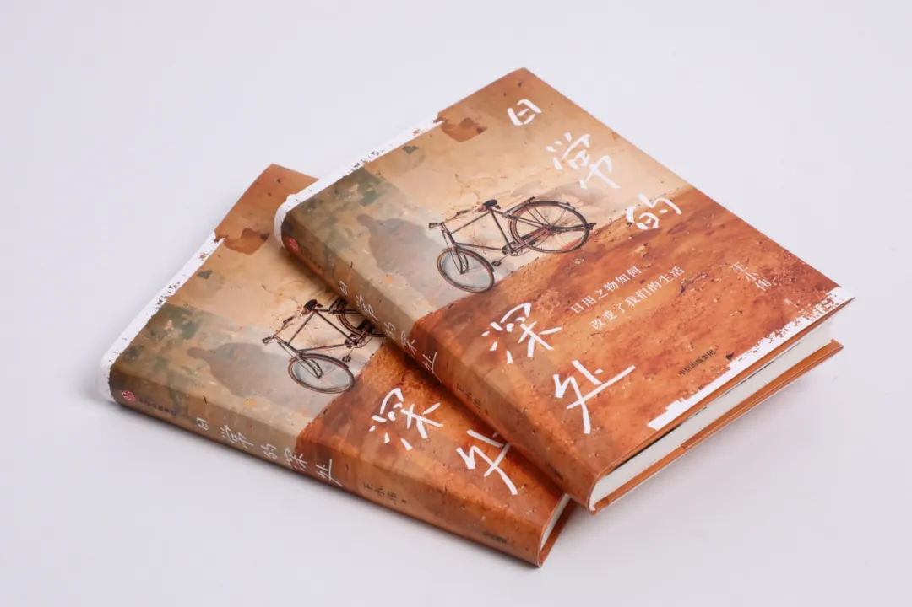
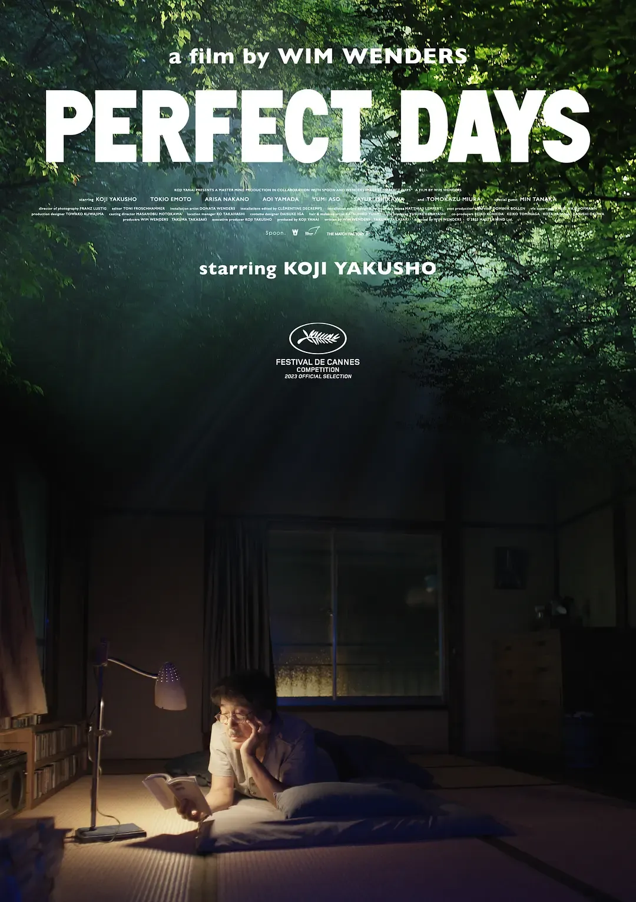
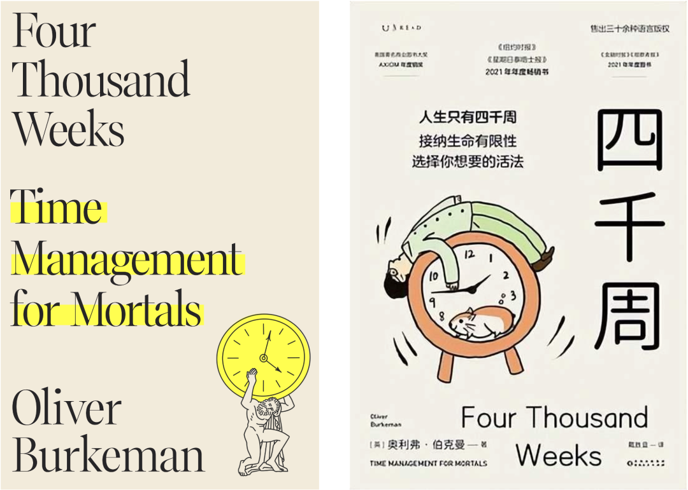
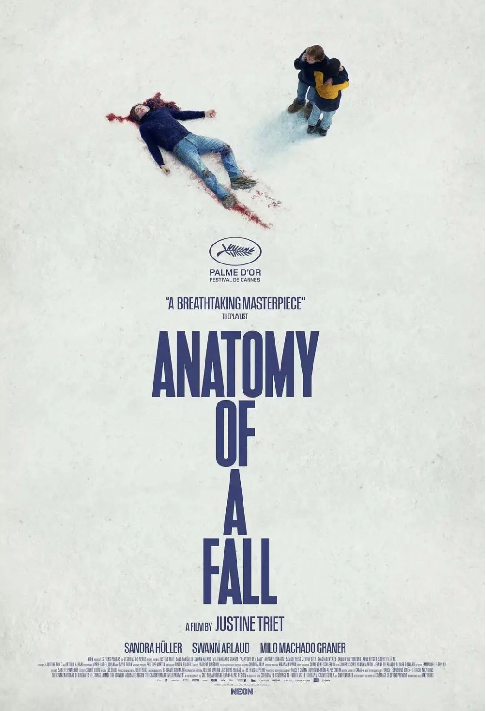
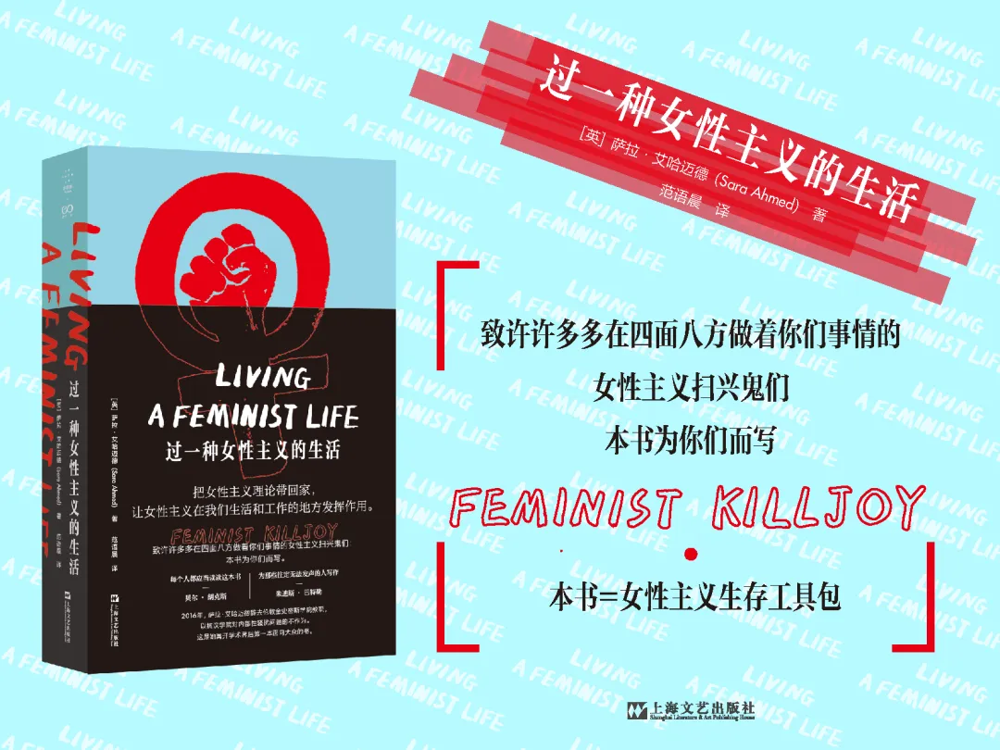
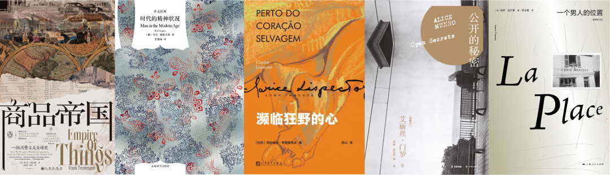

年光与物随流水，度过2024年的一半。
工作上，有一些重点转变，出了几趟差，愈发深刻地感受到复杂环境中的身不由己，以及效率至上的大企业如何对人产生异化的作用。
生活上，去了一趟川西，看看原野与雪山；回了几次科大本部上课，而初识了石榴花；参加了高中姐妹的婚礼，见了不少老朋友。
写作上，开设了《产品营销强壮手册》这个小报童专栏，收获了一点点付费读者；还开始在少数派上记录生活。
当然，也看了一些书和电影，所以有这样几则记录，想与你分享。
日常的深处

世界变化很大，很多物品原本承载的意义已经发生了天翻地覆的变化。世界变化也不大，有些东西依然还在发挥着自己的作用，告诉我们的日常生活的价值，唤起我们最本初的愿望。
如今的日常生活中，确实有很多东西和需求，都是被建构起来的：越来越细分的消费品功效，睡觉要穿睡衣，旅行要穿波西米亚风裙子，运动要穿Lululemon。东西越来越多，自然需要足够多的理由才能让你知道：你还可以再多买一点，多买多快乐。
如果毫无觉知，会以为这样的自己就是时尚的弄潮儿，认真生活的精致族。与此同时，还需要不断赚钱，以维持做个体面的都市人。
消费，确实推动了很多行业的发展，也深刻渗透在现代文明中，但不经思考的消费，就仿佛成为了消费主义的奴隶。赚钱，追求品牌，便成为了消费主义的永动机，而不是关注真切的生活体验。
完美的日子

这部电影——一个厕所清洁工那日复一日的独居生活，就像一个不那么精英主义的现代童话，它为我们演绎了在现代社会里，人们可以如何度过一种自洽的低欲望生活，有半墙的旧书、摇滚乐的旧卡带，一个小屋子和一个旧面包车。
这种生活当然不是始终波澜不惊的，不负责任的草包同事突然辞职，为男主带来过于忙碌的工作，也会让他烦躁与不满。出于善意把钱给了同事，带来了车没油时的窘迫和后几日的泡面度日。而侄女的离家出走，则为他带来了短暂的交流与理解。
这种生活也不是那么被世人理解，他勤快劳动，自制工具清除公共厕所的卫生死角，对细微之处也抱着认真的态度，但这种与中产精致生活背道而驰的生活方式，代价就是他人的冷眼与嫌弃，即使这种情节看上去不那么激烈。冷漠的白领、疏远的妹妹、焦躁的年轻同事，这些其实都意味着男主在社会阶层里的边缘地位。
但拥有自己的精神世界，还是能承受寂寞，每晚随意看上几页书，困了就睡去，清晨为植物喷水，货车上的英伦摇滚或爵士乐也让人心神安宁。虽然终不是“无事小神仙”，但已经是“完美的日子”。
生活中的诱惑太多，人也太多，钱是格外重要的，劳动是有等级的，孤独是那么难以承受，所以人们常常忘了，生活是有选择的，有主体性的向下也是可以的。
四千周

感受一
“我们被猛然抽离于当下，带向一种永远扑往未来的人生，永远在担心事情能否解决，永远抱着希望之后能获利的心态去经历一切，从未真正实现内心的宁静。这让我们几乎不可能体验“深度时间”，体验那种永恒的时间感受。我们需要忘掉抽象的准绳，重新投入现实的鲜活当中，才能获得这种体验。”
这几年我确实是一个让时间表、日程规划主宰了生活的人，也发现自己让生活充满了那种玛丽莲·罗宾逊所说的“沉闷无趣的紧迫感”。《四千周》里强调——掌控人生的感觉，注定是抓不着的。我早起、运动，每一项计划都作出表格来打卡、记录与管理，为的就是获取那种掌控人生的爽感和正向激励的作用。
而如今，我在让自己注意且习惯的是：
**就算没能掌控人生——也没关系。**不用把自己逼得太狠，这一切就当作一个游戏就好。偶尔的懒惰都是可以的，人是有限的，人本质上依然是动物。理解自己的动物性，接纳自己。
当然，还好我现在做的大部分试图去“掌控”的事情，都是为了做更重要的事情，实现更想要的人生状态。那就不算远离自己。
感受二
你试图“饱享”这世上能有的各种体验，感觉自己仿佛已经真正地活过了——然而这世上的体验实在太多，即使体验过那么几个，也无法让你感觉已经享尽人生。相反，你发觉自己又跌回到了效率陷阱中。你获得的奇妙体验越多，就越觉得自己可以，也应该继续拥有更多奇妙的体验，这种“存在的应接不暇”之感也就变得更为强烈。
我也有过这种状态。或许未来，我会试图告诉自己：不是所有体验我都能感受到，我也没有那么多时间精力去体验，只要能把自己最想要的那几件事儿做到、体验到，就很好了。其他的，大可不必觉得有什么遗憾的。要警惕，那种不经思考的"想要的越来越多"。
人的一生有多长呢？不过四千周而已。选择自己的人生，而不是被动地想要更多东西。
坠落的审判

在B站看到一位UP主这样评论《坠落的审判》中的那位意外死亡的丈夫：他对于世界的感受是放射状的。他具备对生活和的敏感与共情，但是又缺乏成为作家的钝感。无法只把情绪放在写作中进行抒发。
确实，专业的发展需要更理性的自我管理、情绪控制。当女性在这方面表现远胜于男性的时候，受到的审视与质疑似乎更为强烈。
在传统的家庭分工中，那个难以聚焦、难以理性发展专业的角色往往是女性在充当。漫无尽头的家务劳动、育儿情绪消耗，也是放射状的，在这样的情况下，怎么才能把精力切割为一种有边界的东西？拿出相对大段的时间，去专注、学习或精进某种专业技术？
这种问题并不仅仅是出现在女性身上，它会广泛地出现在充当家庭里隐形劳动付出者更多的那个“在家里的”人身上。当更强更理性的角色是女性时，一切好像都没那么合理似的，这个电影就是让人意识到这一点——这种“不合理的感受”，才是最不合理的。
过一种女性主义的生活

最近的一年，我似乎进入了女性主义冷静期，不再像前几年那样对女性的境遇时而狂怒、时而无望。
在日常的生活中，我逐渐在一些明显出现厌女言论的交谈里，尤其是出现荡妇羞辱的时候，去声色严肃地指出问题。当然我也感受到了谈话对象——男性，对我态度的不悦，我很接受对方觉得我是偏激的、冲动的、敏感的“扫兴鬼”。因为，我很清楚地认识到，越是这样的时刻，我越要说出话来，我是有选择、有理智地要在这样的时候说话。
我希望实现的效果，并不是仅仅靠一段对话就去扭转一个男性的顽固习惯，而是让同在一个场域交谈中的其他女性可以感受到女性主义的力量，意识到这个男性的言辞充满问题与破绽，有无数时刻，我们不应该对那些不适感装聋作哑。
更多时候，我在思考现实与理论之间的鸿沟该怎么用一言一语一个动作来弥合。
我仍然在思考生育对女性的影响与意义。无论未来的自己是否生育，我都希望那是经过慎重思考后作出的选择，而不是未经审视的“宿命”。
我还在思考，哪些欲望是合乎人性的需要，哪些是被引导的惯性。我承认，这让我痛苦。
这时候，我看到了《过一种女性主义的生活》里的这句话：“如果做一个扫兴鬼这件事将你带离了你所处的世界——朝日与夕阳，树木倾斜的样子，你讲笑话时朋友脸上的微笑；冰凉洁净的水；沉浸在大海中的感觉；烹饪时熟悉的香料气味，那么这件事就占用你太多精力了。”
然后萨拉给了一个好办法——在自己女性主义的工具包里，放一些“病假条”。
这个建议让我对自己的状态有了更多理解。我希望自己能够在未来的日子里，学会毫无负疚感地偶尔用一用“病假条”。
结 语
除了上面这几个有感想记录的，这半年看的作品👇其实还有一些也值得推荐。

比如爱丽丝·门罗的《公开的秘密》，我是看了这本书，才领悟到那句“你总会在她的某个故事里撞见自己”。以及安妮·埃尔诺的原生家庭三部曲《一个男人的位置》《一个女人的故事》和《一个女孩的记忆》，很难简单说清楚看这三本书的感受，可谓共鸣泛滥，无语凝噎。还有一部动画电影《机器人之梦》，也很值得分享，看完我只写下了一句话：“我们只会陪伴彼此一段时间”。
关系是流动的，感情是流动的，我们生活也是流动的。以上就是我2024年上半年的一小部分生活。